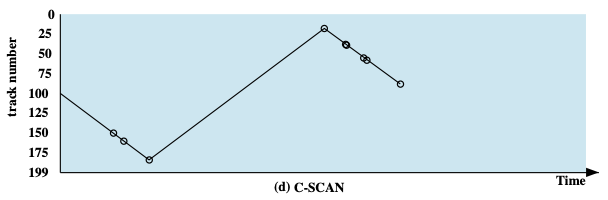

I/O
I/O 的访问、管理分为两种类型：（或者说按照编址类型划分）
- I/O 指令（独立编址）
- 通过 I/O 端口号访问设备管理器
- 涉及模态转换、状态更迭时才采用
- 内存映射 I/O （统一编址）
- 设备的寄存器或存储被映射到内存物理地址空间中；
- 通过内存 load/store 指令完成 I/O 操作；
- MMU 设置映射，硬件跳线或程序在启动时设置地址；
- 实际上绝大多数采用的方式
I/O 控制：
- 轮询，或者程序直接控制
- 通过忙等待（轮询）检查 I/O 控制器状态
- 完全交给 CPU
- 中断
- 等待中断来得到 I/O 控制器状态信息
- 中断到来前 CPU 可以干其他事（CPU、I/O 并行）
- DMA
- 磁盘和 I/O 设备之间直接传输数据
- CPU 极少介入，仅在数据传输完成时介入，其他时候 CPU、I/O 并行工作
- CPU 上专门的部件作为 DMA 控制器
- *通道控制
- 一种特殊的、独立于 CPU 的处理机，相当于独立性更强的 DMA
- 指令类型单一，与 CPU 共享内存
- 实现 CPU、通道、I/O 三者并行工作
磁盘调度算法¶
给定磁盘访问 LBA 序列： 55, 58, 39, 18, 90, 160, 150, 38, 184
FIFO¶
无论在哪个场景都是最公平的调度算法
优先级(PRI)¶
调度的控制超出了磁盘管理软件的控制范围
目标不是优化磁盘利用率，而是实现其他目标
短批作业和交互式作业的优先级更 提供良好的交互式响应时间
较长的工作可能需要等待过长的时间 对数据库系统是一种糟糕策略
最短服务时间优先(SSTF)¶
选择使磁头臂从当前位置开始移动最少的磁盘 I/O 请求
总是选择导致最小寻道时间的请求
扫描算法(SCAN)¶
也叫电梯算法、NOOP 算法、SCAN 算法。
非公平的，不同请求获得的优先级是不一样的：越靠近外侧的扇区请求响应的优先级更高

循环扫描算法(C-SCAN)¶
C-SCAN 也就是 Circular Scan 算法。

其他 SCAN 变种¶
以下介绍的 2 中变种 SCAN 调度算法的目的在于避免磁臂黏着现象，具体可参考：https://blog.csdn.net/m0_52733659/article/details/133840705
N 步 SCAN¶
设置多个队列，每个队列容量为 N ，轮流对每个队列采用 SCAN 扫描算法，该队列不接受请求，所有请求按照 FIFO 放入下一个队列。每一次扫描，都只处理 N 个请求。
FSCAN¶
设置 2 个队列，轮流对 2 个队列采用 SCAN 扫描算法，扫描其中一个队列的时候，该队列不接受请求，所有请求按照 FIFO 放入另一个队列
总结¶
SSTF 是常见的，具有天然的吸引力
SCAN 和 C-SCAN 对于磁盘负载较大的系统性能更好
NVM 调度¶
没有磁头或旋转延迟，但仍有优化空间
在 RHEL 7 中，使用 NOOP (无操作、电梯调度)，但合并相邻的 LBA 请求
 NVM 最佳随机 I/O
NVM 最佳随机 I/O- 硬盘最佳顺序 I/O
存储设备管理¶
低级格式化¶
低级格式化，或者说物理格式化
将磁盘划分为磁盘控制器可以读写的扇区
每个扇区可以保存头信息、数据和纠错码(ECC)
通常 512 字节的数据，但可以选择
高级格式化¶
高级格式化，或者说逻辑格式化、“创建文件系统”
文件系统的单位往往和低级格式化的扇区不一样！
将磁盘划分为一组或多组柱面，每组柱面都视为逻辑磁盘
为了提高效率，大多数文件系统将块分组到簇中
- 磁盘 I/O 在块中完成
- 文件 I/O 在簇中完成
原始磁盘访问¶
绕过操作系统的文件系统，也就是绕过操作系统的高级格式化，往往适用于自己进行数据管理的应用程序（例如数据库）
RAID¶
| Category | Level | Description | Disks required | Data availability | Large I/O data transfer capacity | Small I/O request rate |
|---|---|---|---|---|---|---|
| Striping | 0 | Nonredundant | \(N\) | Lower than single disk | Very high | Very high for both read and write |
| Mirroring | 1 | Mirrored | \(2N\) | Higher than RAID 2, 3, 4, or 5; lower than RAID 6 | Higher than single disk for read; similar to single disk for write | Up to twice that of a single disk for read; similar to single disk for write |
| Parallel access | 2 | Redundant via Hamming code | \(N+m\) | Much higher than single disk; comparable to RAID 3, 4, or 5 | Highest of all listed alternatives | Approximately twice that of a single disk |
| 3 | Bit-interleaved parity | \(N+1\) | Much higher than single disk; comparable to RAID 2, 4, or 5 | Highest of all listed alternatives | Approximately twice that of a single disk | |
| Independent access | 4 | Block-interleaved parity | \(N+1\) | Much higher than single disk; comparable to RAID 2,3, or 5 | Similar to RAID O for read; significantly lower than single disk for write | Similar to RAID 0 for read; significantly lower than single disk for write |
| 5 | Block-interleaved distributed parity | \(N+1\) | Much higher than single disk; comparable to RAID 2,3, or 4 | Similar to RAID 0 for read; lower than single disk for write | Similar to RAID 0 for read; generally lower than single disk for write | |
| 6 | Block-interleaved dual distributed parity | \(N+2\) | Highest of all listed alternatives | Similar to RAID 0 for read; lower than RAID 5 for write | Similar to RAID 0 for read; significantly lower than RAID 5 for write |